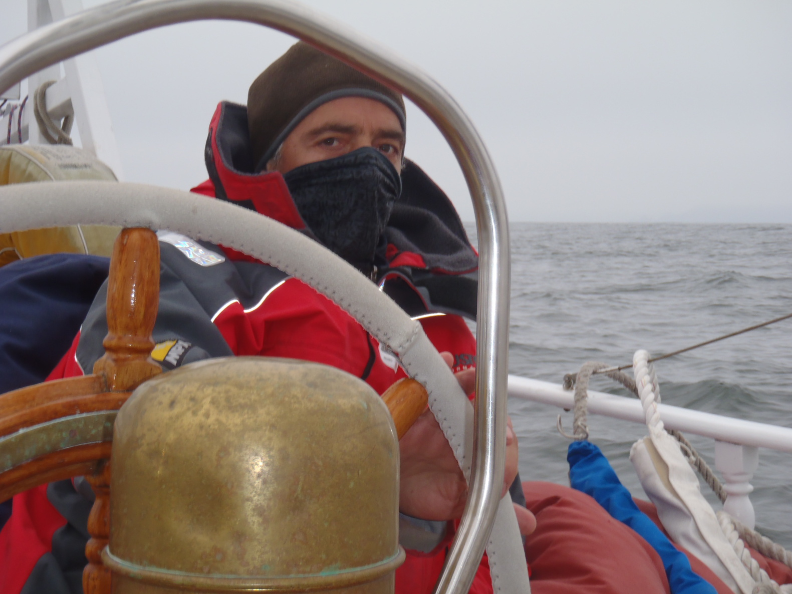
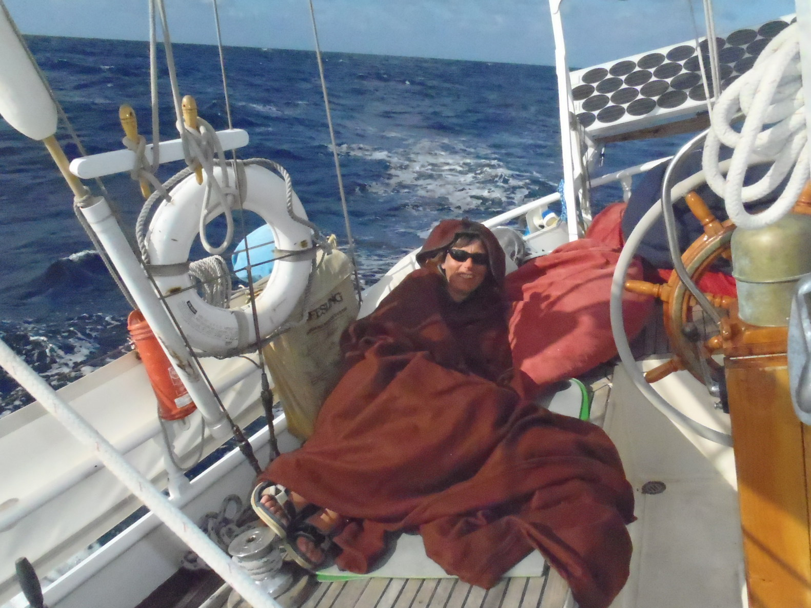

On quitte Oyster Point le 2 octobre, un samedi, à 8:30,
avec le jusant. Le temps correspond à ce qu'on peut attendre à cette époque de l'année,
gris et brumeux. Le vent monte en chemin, on est à la voile pour de vrai peu après le Bay Bridge.
On vient tirer des bords près du St Francis Yacht Club et Crissy Field, des amis sont rassemblés pour nous dire au-revoir...
Janis et Michel ont fait des photos...
Après le Golden Gate, on a eu du clapot, on a le vent sur le nez, et le courant avec nous.
Mais ça va. Ciel couvert, comme prévu.
Des marsouins autour du bateau.

Toutes voiles dehors, tribord amure.
On est au près, mais le vent commençait déjà à virer à droite, et
à 17 heures, on commençe déjà à choquer, je n'envisageais pas de pouvoir le faire aussi tôt.
À 18 heures, des baleines (baleines à bosses) sautent hors de l'eau et tapent sur la surface
avec leurs nageoires et leur queue... Spectaculaire. Une d'entre elles est venue près du bateau, souffler tout près de Corine.
La nuit, la lune n'est pas là, et le sillage brille de plancton. Et peu après le coucher du soleil, des marsouins viennent jouer dans le plancton
dans le sillage.
Pour être sûre de ne pas être malade, Corine a décidé de dormir sur le pont.
Elle a son ciré afghan.

Contrairement à ce qu'on aurait pu attendre, la mer n'est pas trop agitée, la nuit est tranquille.
C'est bien pour démarrer, et il ne fait pas froid.
|